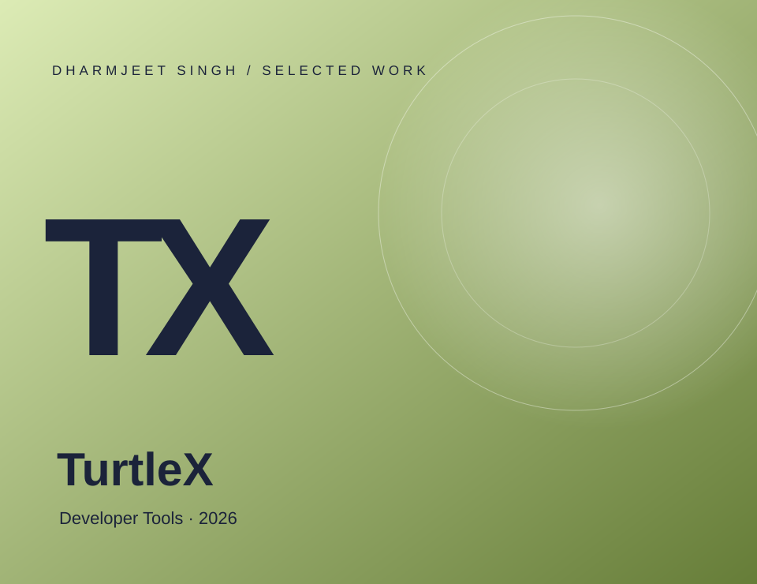
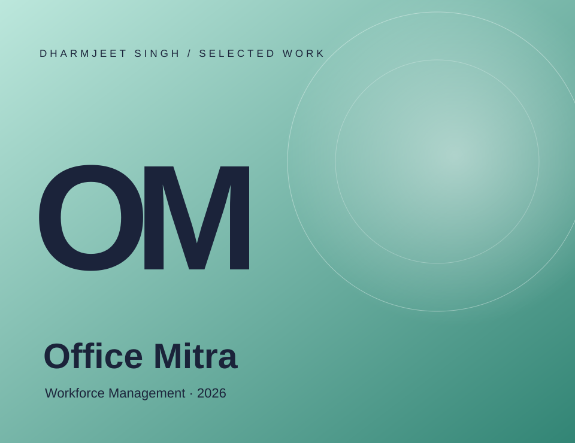

Android
Native apps, from the first screen to a signed build.
- Kotlin
- Java
- Jetpack Compose
- Material 3
- Android Views
- Canvas
Independent developer · Bihar, India
I build Android apps that earn their place on your home screen.
Native Android development in Kotlin and Jetpack Compose — offline-first tools, practical products and a few experiments. I care about interfaces that stay out of the way, and code that keeps working when the network doesn't.
Scroll to explore


Original cover artwork from selected projects — concept graphics, not app screenshots.
01 / About
I'm Dharmjeet — an Android developer from Bihar, India, building apps under the SynFusion name. Most of my work is native Android: Kotlin, Jetpack Compose and local-first data for products that need to keep working offline.
The rest is curiosity — games, AI tooling, Blogger themes and whatever the next idea requires.
WorkDaily turns attendance, wages and advances into a PDF passbook for daily-wage workers. Office Mitra handles the everyday employee workflows — attendance, leave, approvals and salary slips. TurtleX asks what a focused coding workspace could feel like on a phone, and Jump Adventure is where I learn game loops and rendering properly.
I'm early in this journey and I say that plainly. Each project adds a pattern, a technique or a better question — and the next one gets a little more considered. The goal is simple: keep shipping useful software and keep learning in public.
No invented awards, employers or degrees.
02 / Selected work
Four projects that show how I think: real use, honest scope, and attention to the parts people touch.
Cover images are original editorial artwork, not app screenshots. Links go to the live store listing or public repositories.
8 projects · Android, AI, games and web
03 / Toolkit
Everything here is used in the projects on this site — from the editor to the store listing.
Native apps, from the first screen to a signed build.
Structure that keeps features readable and dependable.
Local-first data plus the services an app needs.
Where the apps are built and where they are documented.
No percentage bars. These are the tools and patterns used in the projects on this site — evidence over self-scoring. Check the public code ↗
04 / Journey
No invented dates or credentials — just the sequence of work reflected in the projects above.
Started with science, problem solving and a habit of taking things apart to understand how they work.
Moved into Kotlin, Java and Android Studio, rebuilding small apps until the fundamentals became routine.
Designed and shipped WorkDaily: offline attendance, wages, overtime and PDF passbooks for daily-wage workers.
Published Office Mitra, TurtleX and Jump Adventure on GitHub, with CI checks and documented decisions.
Extended into AI prompt tools, Blogger themes and web experiments — same care, different surfaces.
05 / Open source
Public repositories, build workflows and the code behind the projects.
— public repositories
Fetching public repositories from GitHub…
Repository names, languages and descriptions come from the public GitHub API when it is available. If the request fails, selected public projects are shown instead — no fabricated statistics.
Explore my GitHub